תשעה מינים ארסיים המחייבים זהירות, ושנים עשר מינים לא ארסיים שאינם מהווים סכנה של ממש. כל כרטיס למטה מבוסס על הערות השטח שלי, ואמשיך להוסיף תמונות ופרטים חדשים עם כל מפגש נוסף.
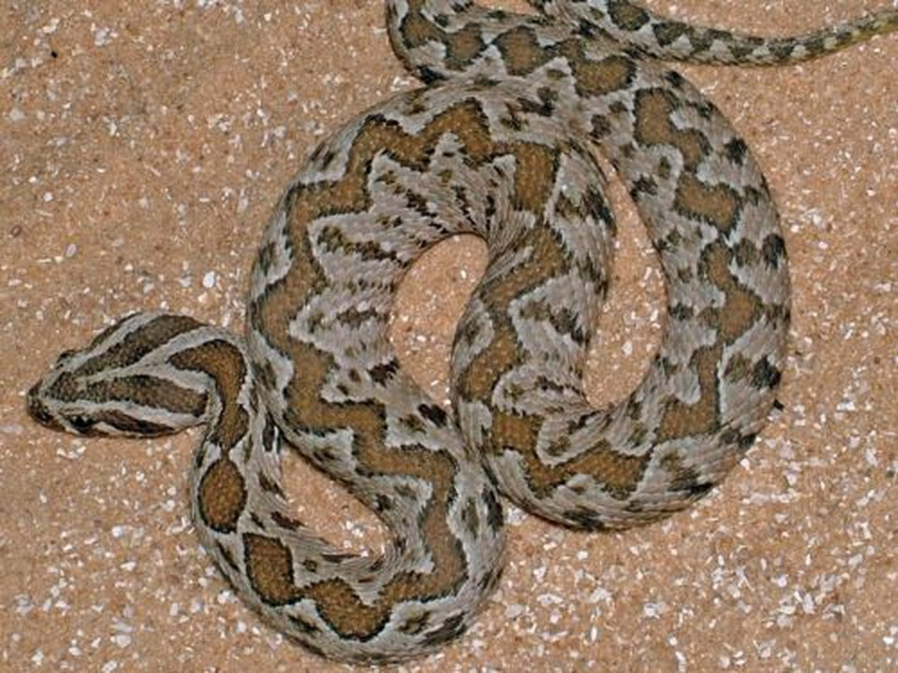
ארסיהנחש הארסי הנפוץ ביותר בישראל, והאחראי לרוב ההכשות הארסיות באזור. מכונה מקומית גם 'נחש הבקלאווה' בשל תבנית המעוינים שעל גבו. אין להתקרב אליו או לנסות ללכוד אותו גם אם הוא נראה רגוע, שכן הוא עלול להכיש במהירות רבה.
קראו את הכתבה המלאה ←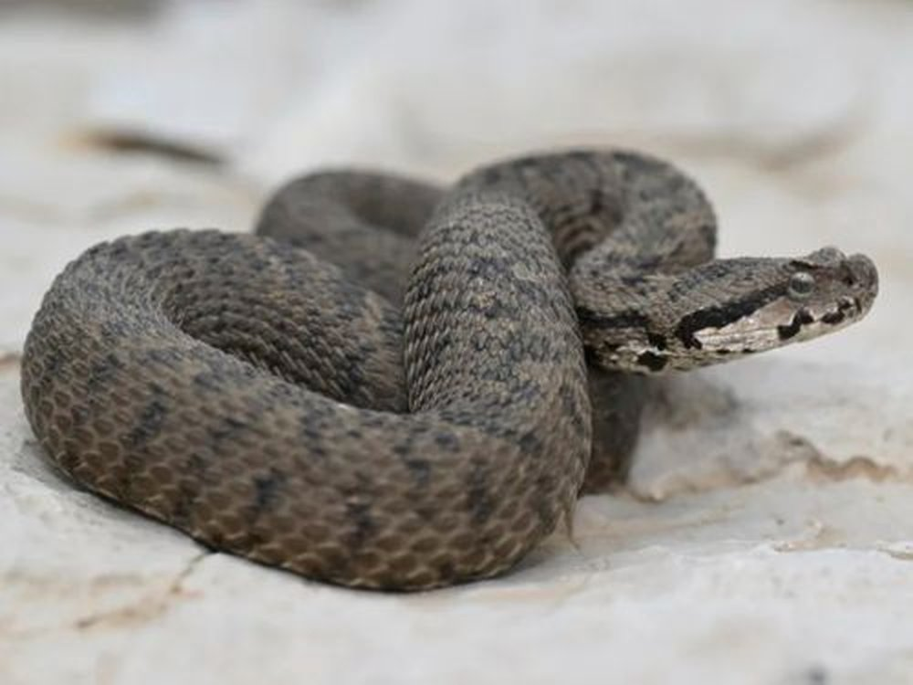
ארסינחש ארסי נדיר מאוד, ובישראל הוא חי רק באזור אחד: החלק הגבוה של הר החרמון. עמיד לקור עז ופעיל בתקופה קצרה בשנה לאחר הפשרת השלגים.
קראו את הכתבה המלאה ←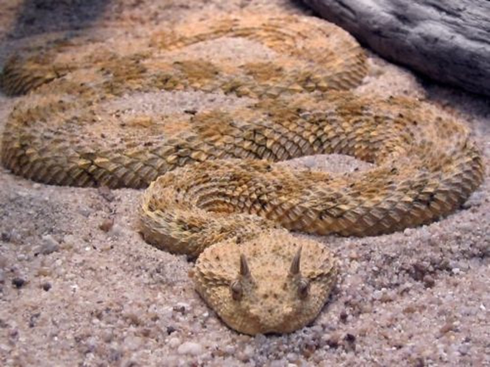
ארסימזוהה בשני קרניים קטנות מעל העיניים, ונע בתנועת דישדוש צדדית אופיינית מעל החול. טומן עצמו חלקית בחול ואורב לטרפו בסבלנות רבה.
קראו את הכתבה המלאה ←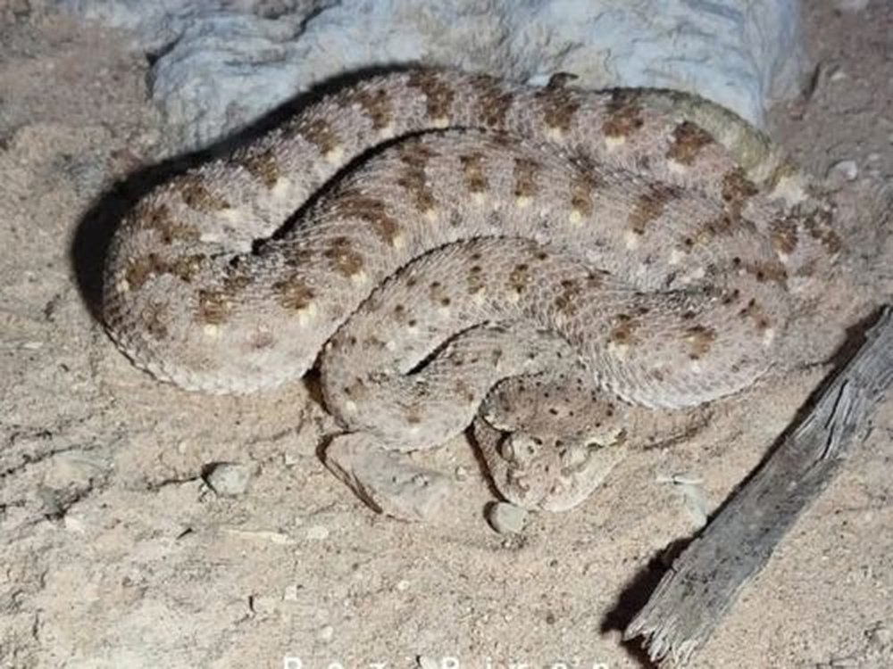
ארסיגדול מעכן החרטומים ולרוב ללא קרניים, חי בדיונות ובוואדיות מדבריים בדרום. אם נתקלתם בו, אל תתקרבו, אל תנסו לגעת בו או ללכוד אותו, ותנו לו להמשיך בדרכו בבטחה.
קראו את הכתבה המלאה ←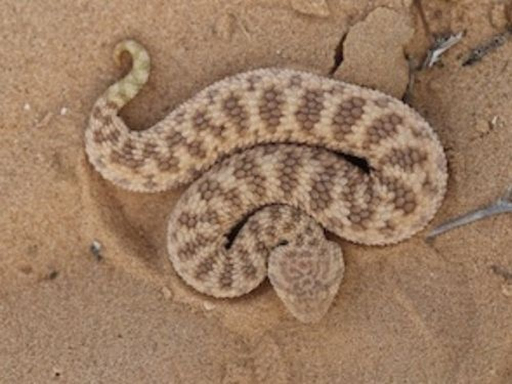
ארסיהצפע הארסי הקטן ביותר בישראל, קובר את גופו כולו בחול הרך ומשאיר רק את עיניו, וצד במארב. למרות גודלו הקטן זהו נחש ארסי שיש להתרחק ממנו.
קראו את הכתבה המלאה ←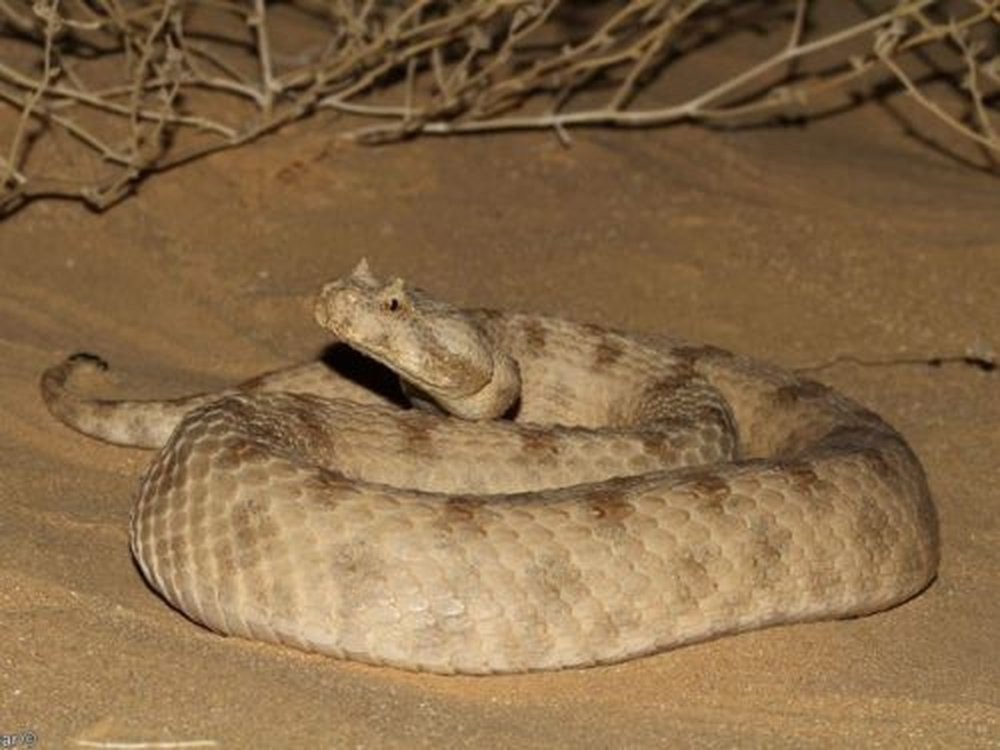
ארסינחש ארסי המותאם במיוחד לחיים במדבר. מכונה גם 'הקוברה המזויפת' כי הוא מנפח את צווארו כתחבולת הגנה. הצעירים ניזונים בעיקר מלטאות, ואילו הבוגרים ניזונים בעיקר מעכברים ומציפורים.
קראו את הכתבה המלאה ←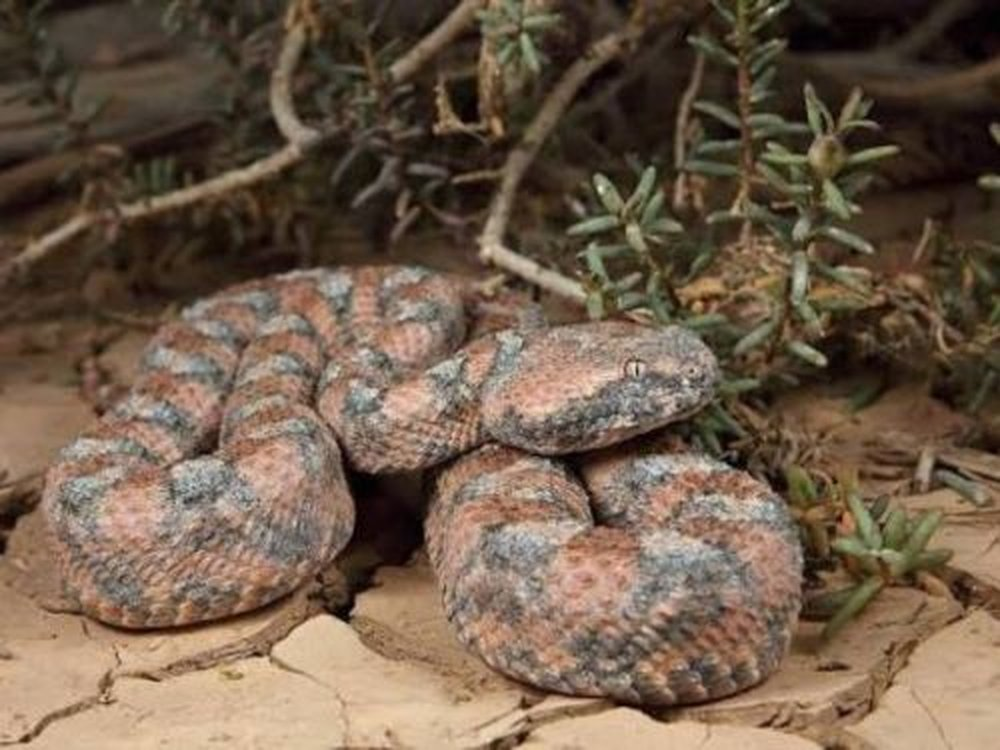
ארסיאחד הנחשים הארסיים הנפוצים באזורים המדבריים. משפשף קשקשים צדדיים זה בזה ומפיק קול 'מסור' מזהיר לפני ההכשה. מהמסוכנים באזורים סלעיים יבשים למרות גודלו הקטן.
קראו את הכתבה המלאה ←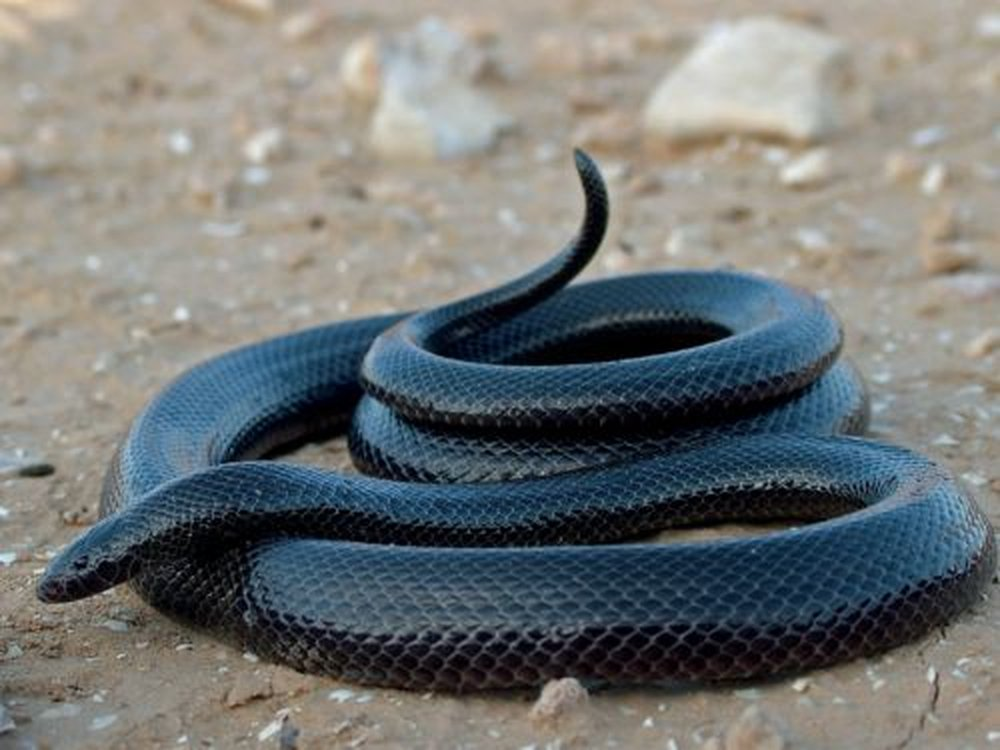
ארסיחי באזורים מדבריים ויוצא לפעילות אחרי רדת החשכה. בעל יכולת להכיש גם לאחור — ולכן אחיזה מאחורי הראש (השיטה המקובלת בנחשים אחרים) היא טעות מסוכנת מאוד ונפוצה. אין לנסות להרים אותו או להחזיק אותו ביד.
קראו את הכתבה המלאה ←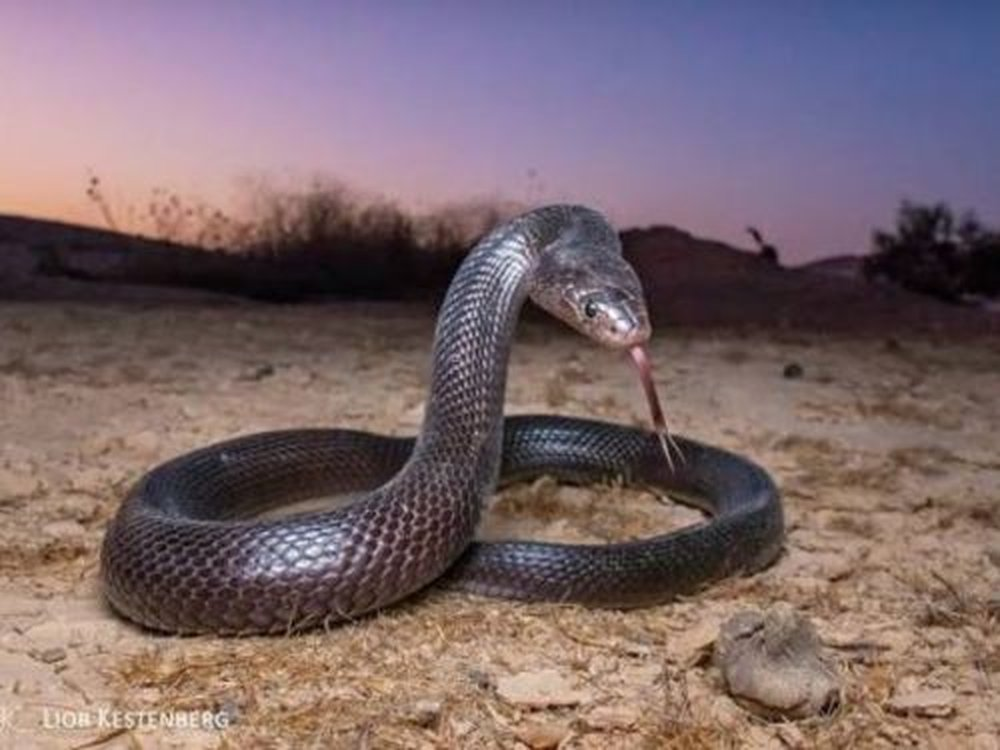
ארסימהנחשים הארסיים המסוכנים בישראל, וצבעו השחור המבריק מזהה אותו בקלות. למרות מראהו המרשים הוא אינו תוקף בני אדם ללא סיבה, וברוב המקרים יעדיף להימנע ממפגש. רעלו נוירוטוקסי.
קראו את הכתבה המלאה ←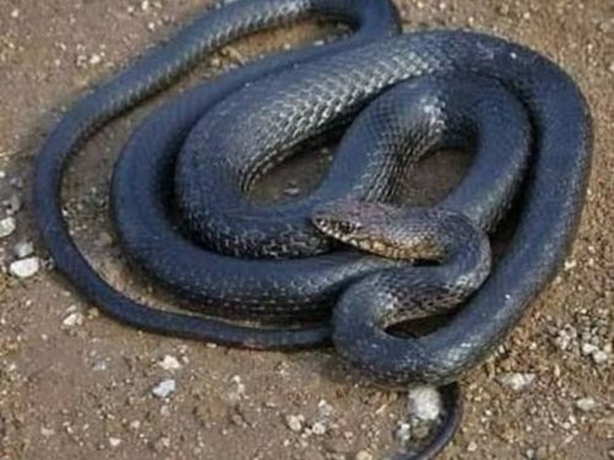
לא ארסינחש גדול ומבריק שמראהו משתנה במהלך חייו: כשהוא בוקע צבעו חום בהיר עם כתמים, ועם ההתבגרות גופו הופך לשחור מבריק ואחיד בעוד הלסת התחתונה נשארת בהירה. מהנחשים הנפוצים בישראל, פעיל בעיקר ביום ורק לעיתים נדירות נראה בלילה. עיניו גדולות והאישונים עגולים.
קראו את הכתבה המלאה ←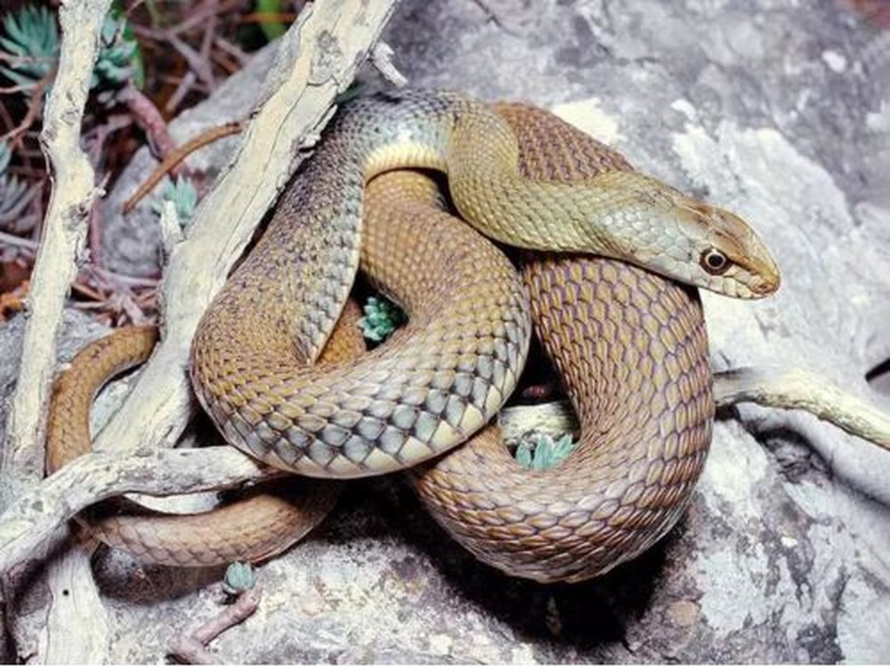
לא ארסיאחד הנחשים הגדולים בישראל. סימן ההיכר שלו הוא קשקשים בולטים מעל העיניים היוצרים מראה של 'גבות', ותלם במרכז כל קשקש. מהיר ומטפס היטב. שימו לב: זהו נחש תת-ארסי, ואינו מסוכן במיוחד לאדם, אך הכשתו עלולה לגרום לתסמינים מקומיים כואבים.
קראו את הכתבה המלאה ←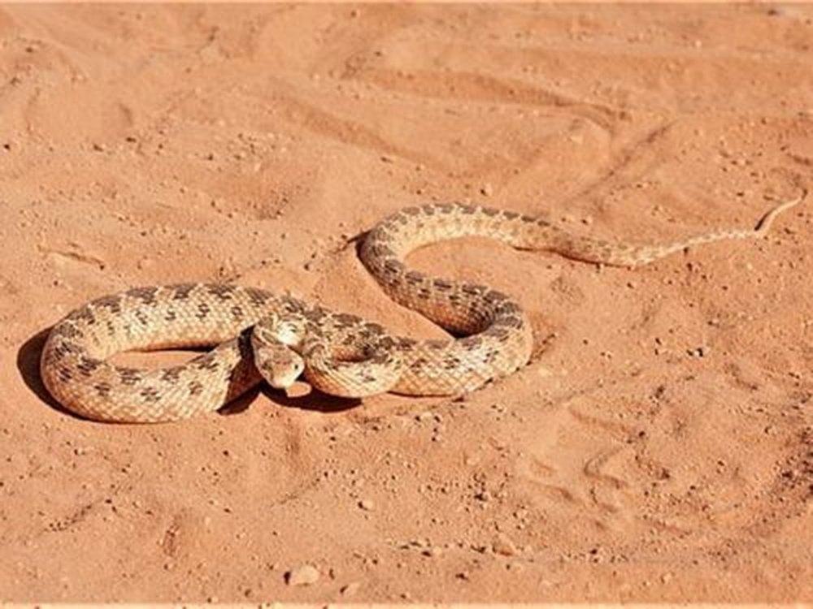
לא ארסיאחד הנחשים המדבריים הארוכים בישראל. צבע גופו חום, צהבהב או כתום, ועל גבו כתמים חומים דמויי מטבעות או צלבים. הראש רחב מהצוואר, ובין העיניים מופיע לרוב פס חום. פעיל בקיץ בשעות אחר הצוהריים המאוחרות ובלילה, מטפס היטב אך עיקר פעילותו על הקרקע.
קראו את הכתבה המלאה ←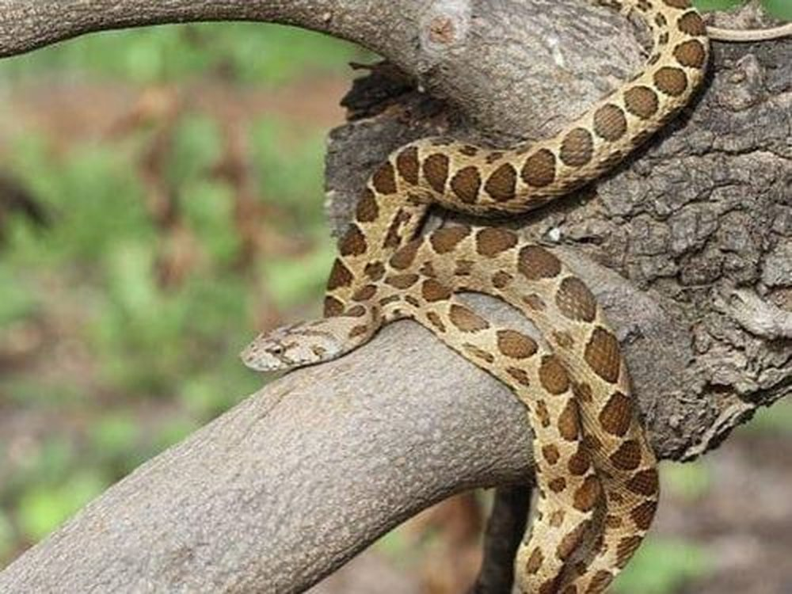
לא ארסינחש בינוני בגודלו וצבעו אפור מבריק, ולאורך מרכז גבו שורת כתמים כהים עגולים או דמויי צלב. בעל יכולת מרשימה לטפס על צמחייה וקירות אבן, ולעיתים נכנס לבתים גם בקומות גבוהות. פעילותו מתחילה עם רדת החשיכה ונמשכת בלילה, וניתן לראותו פעיל גם בחורף.
קראו את הכתבה המלאה ←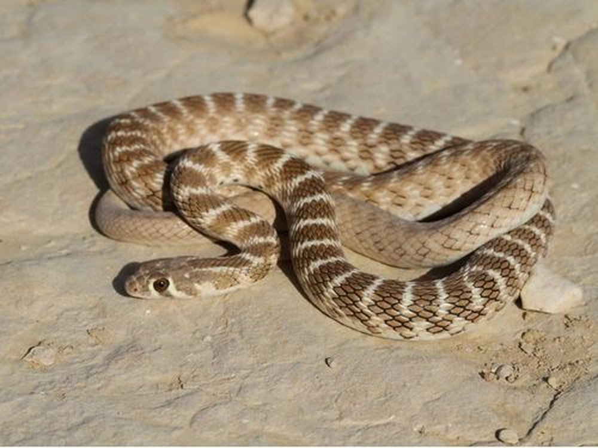
לא ארסיזעמן בינוני, דק ועדין, בעל גוון גוף אפור. מהצוואר לאורך עמוד השדרה מופיעים כתמים אפורים התחומים בקווים רוחביים לבנים, הדוהים מאמצע הגוף. מתחת לכל עין יש שני כתמים לבנים. פעיל בעיקר בשעות הבוקר ואחר הצהריים, ומוצא מחסה מתחת לעצמים או במחילות מכרסמים.
קראו את הכתבה המלאה ←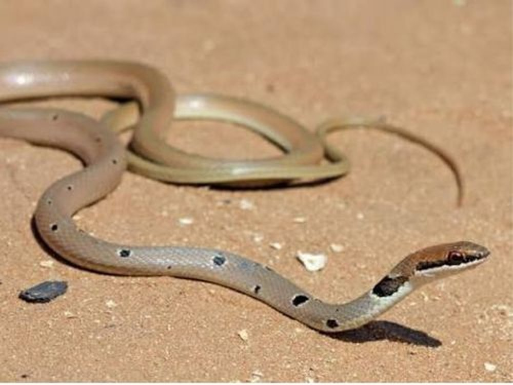
לא ארסינחש דק ועדין, צבע גופו נע בין ירוק זיתי, חום ואפור, וראשו כתום-חלוד. מזוהה בכתם שחור אחד לפחות מאחורי הראש הדומה לקולר ותחום בלבן. מהנחשים הנפוצים בבתי גידול ים-תיכוניים, פעיל ביום ומטפס היטב, ומהיר ברדיפה אחר טרפו.
קראו את הכתבה המלאה ←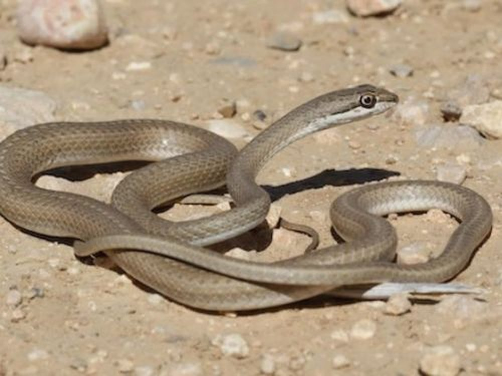
לא ארסינחש דק ובעל גוף חזק, ומראהו משתנה בין צפון הארץ לדרומה: בצפון ארבעה פסים כהים לאורך הגוף, ובאזורים מדבריים הפסים דוהים ולעיתים נעלמים כמעט לגמרי. מהיר מאוד ופעיל ביום, ומאתר את טרפו בעזרת חוש ראייה מפותח. שימו לב: תת-ארסי אך אינו מסוכן לאדם.
קראו את הכתבה המלאה ←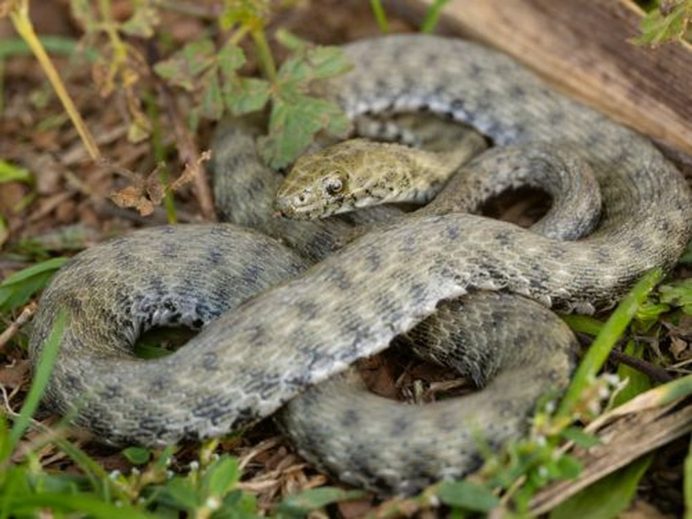
לא ארסיצבע גופו נע בין ירוק, חום ושחור, ומאופיין בכתמים שחורים רבים על גבו המסודרים כמו לוח שחמט. בטנו צהובה או כתומה עם כתמים שחורים לא סדירים. פעיל ביום ובלילה, חי בקרבת בריכות טבעיות ומלאכותיות, ולעיתים נראה גם הרחק ממקורות מים.
קראו את הכתבה המלאה ←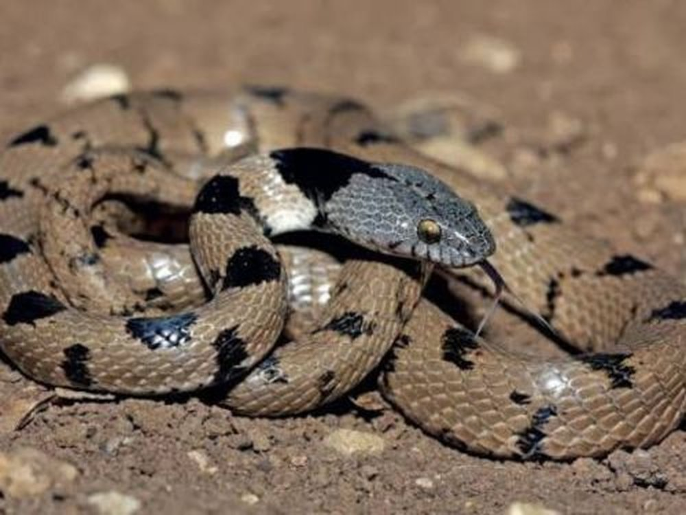
לא ארסיגופו חום או אפור ועל גבו כתמים כהים דמויי מטבעות. ראשו רחב מהצוואר, והאישונים שלו מאונכים – ממש כמו של חתול, ומכאן שמו. פעיל לילה, מטפס היטב אך מבלה את רוב זמנו על הקרקע ונע באיטיות. שימו לב: תת-ארסי אך אינו מסוכן לאדם.
קראו את הכתבה המלאה ←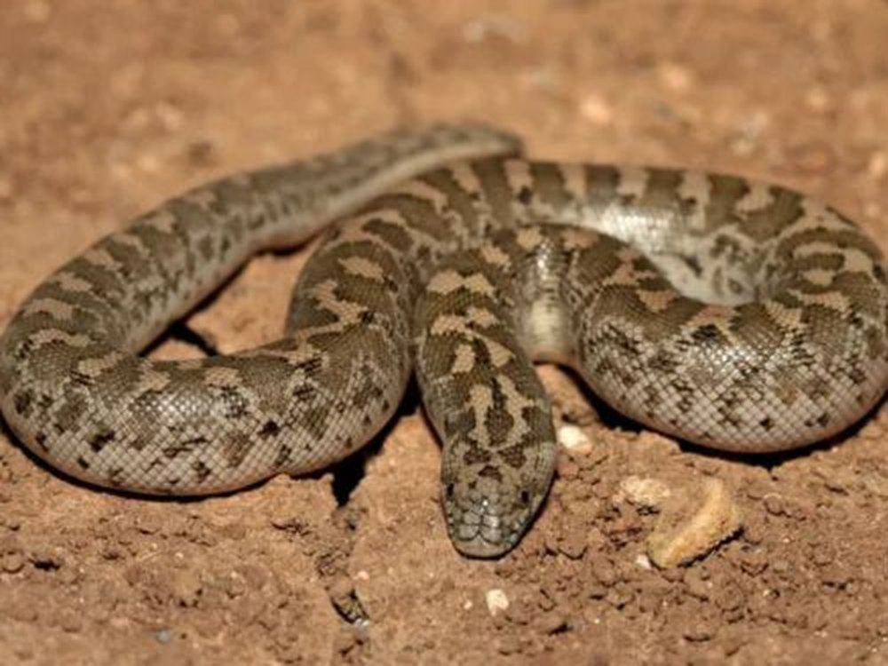
לא ארסינחש עבה ובעל גוף מוצק, עם זנב קצר שקצהו דמוי גדם. הלסת העליונה בולטת מעל התחתונה ומסייעת לו להתחפר, קשקשיו חלקים ועיניו קטנות עם אישונים מאונכים. באזורים חוליים הוא מתחפר באדמה ורק עיניו וחרטומו בולטים החוצה, וכך ממתין לטרפו במארב. הורג את טרפו בכריכת גופו סביבו וחניקתו.
קראו את הכתבה המלאה ←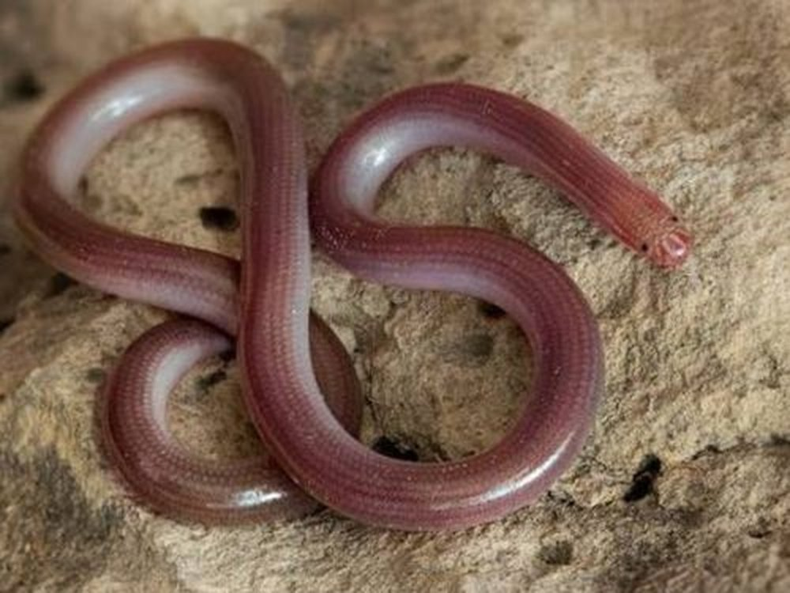
לא ארסינחש דק ועדין מאוד, בעל גוף מבריק שצבעו יכול להיות ורוד, חום או שחור, ומראהו הכללי מזכיר תולעת אדמה. עיניו קטנות מאוד. מבלה חלק ניכר מחייו תחת מחסות וניתן למצוא אותו מתחת לגזעי עצים ואבנים. פעילותו קרקעית ובעיקר לילית, ולעיתים נצפה חוצה כבישים או חודר לגינות.
קראו את הכתבה המלאה ←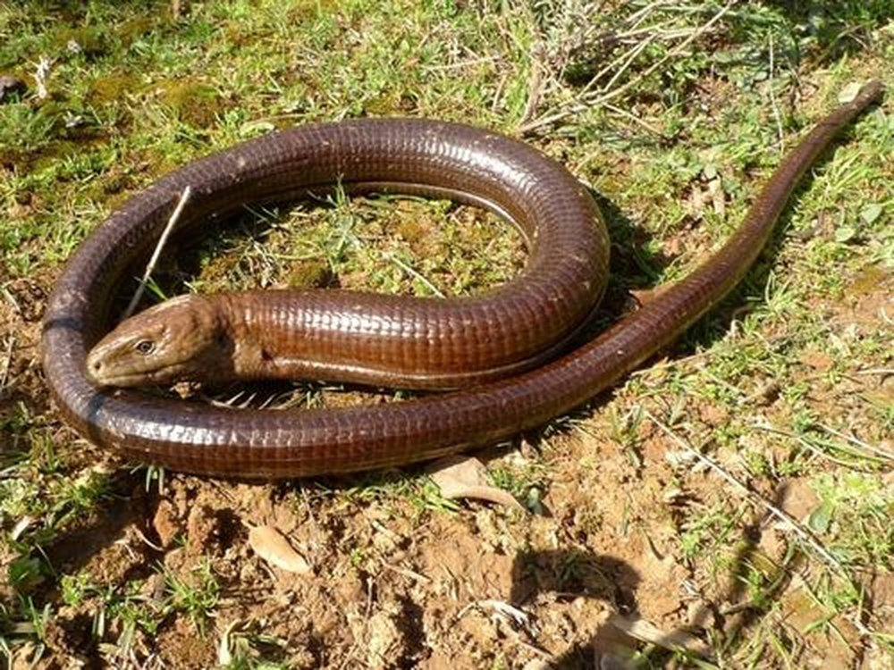
לא ארסיזוחל ארוך וחסר רגליים המבולבל תמיד עם נחש, אך הוא למעשה לטאה אמיתית (ניתן להבחין בעפעפיה הנעים ופתח אוזנה הנראה). לא ארסית כלל ושלווה באופייה, חיה בין העשבים והשדות.
קראו את הכתבה המלאה ←הערה לגבי הדיוק המדעי: הכרטיסים הללו מבוססים על מידע כללי ומתועד על מיני נחשי ישראל, ואעדכן אותם בהדרגה עם תמונות והערות השטח שלי. אם אתם מומחים או לוכד אחר ושמתם לב לפרט הדורש תיקון, צרו קשר.